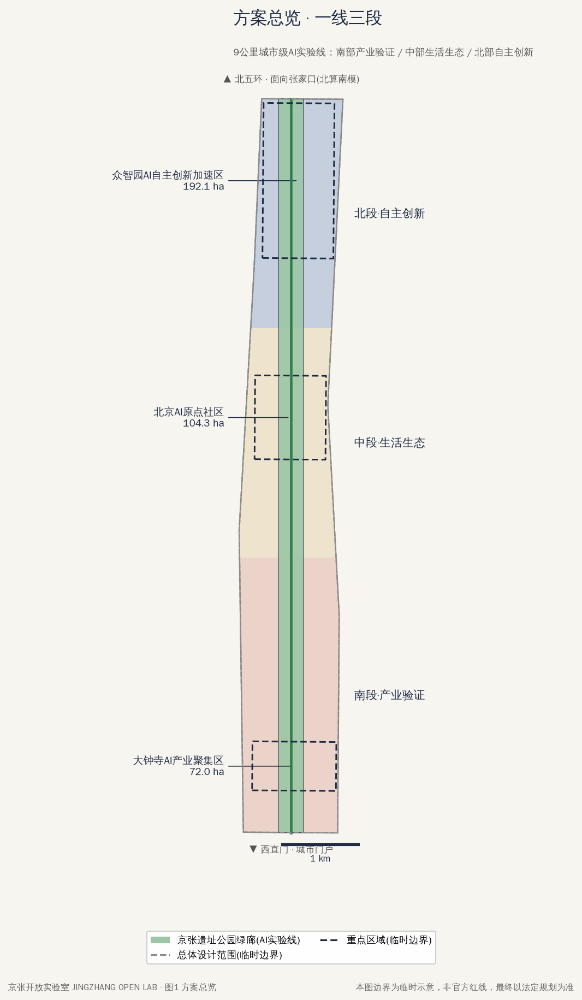
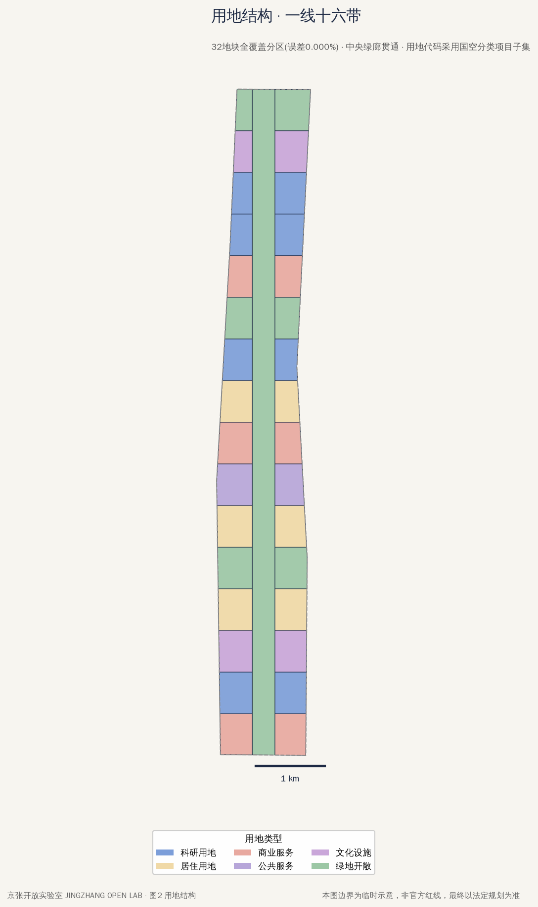
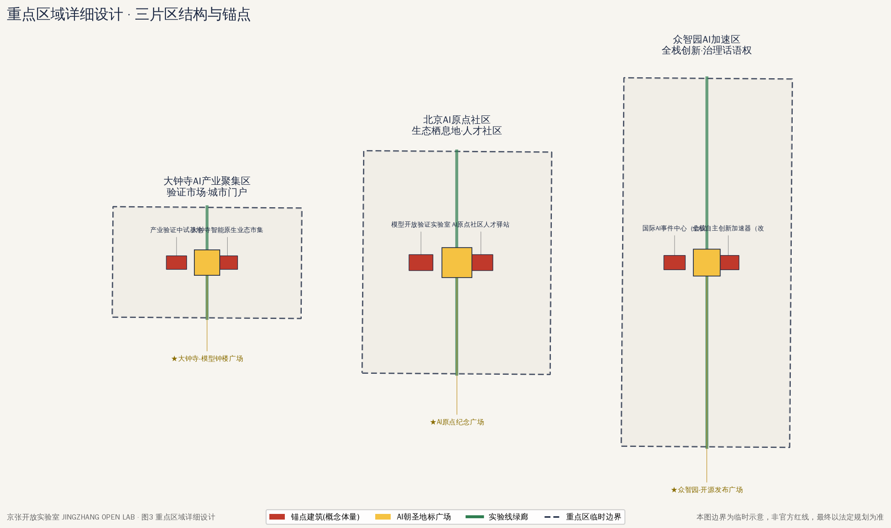
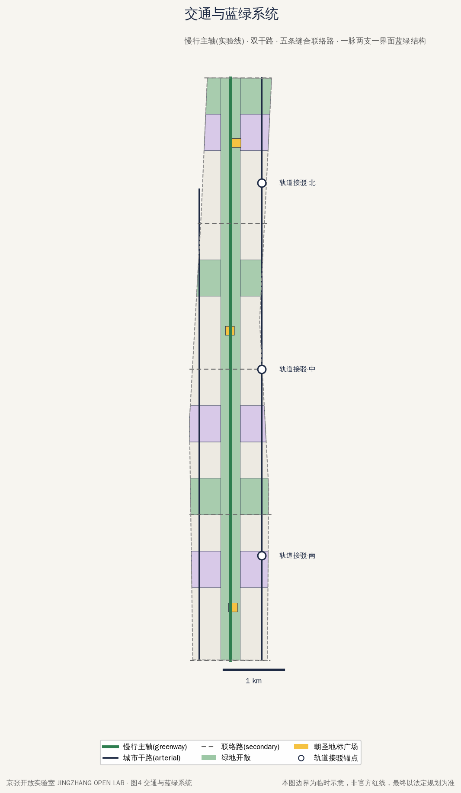
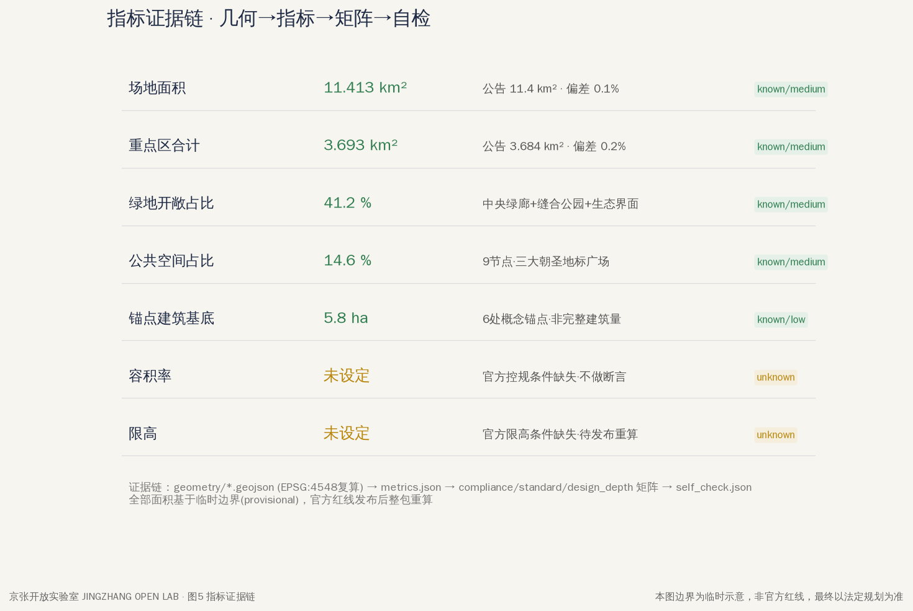

南段 · 大钟寺
产业验证区 · 72 ha城市型智能经济前场：领军企业与智能体新业态的产业验证段，AI场景在真实商业环境中接受市场检验，成熟一个、落位一个。
把百年京张AI创新带建成一条持续运行的城市级AI实验线——9公里京张遗址公园不是一次画完的蓝图，而是一套长期运转的城市实验协议：每一个AI场景的部署都必须绑定可验证指标、可退出预案与公共回报。
以下指标基于临时边界（PROV-SITE-001）在 EPSG:4548 投影下独立复算，并与官方公告数值交叉核对；官方红线发布后须重算。
9公里京张遗址公园作为贯通主线，中央 24% 宽度的绿廊连续不断；两侧十六条功能带垂直挂接，形成"一线十六带"的鱼骨结构。全线自南向北划分为三段实验区，功能梯度递进。
城市型智能经济前场：领军企业与智能体新业态的产业验证段，AI场景在真实商业环境中接受市场检验，成熟一个、落位一个。
近校型转化社区：承接高校源头创新与开源社区，聚焦人才生活生态——居住、学习、交往、转化在同一条绿廊两侧完成。
花园型全栈创新街区：从芯片、模型到智能体应用的全栈自主创新加速区，国家平台与产业展示的主承载段。
"长实验"不等于随意试错。任何AI场景要在这条实验线上部署，必须同时满足三项协议条款——如同信号灯制式，缺一不得放行。
每个场景部署前须声明可量化、可复核的成效指标（服务人次、能耗、误报率、慢行改善量等），由第三方按周期复测公示。
指标不达标或产生负外部性时，场景必须按预案有序退出，空间恢复原状或转交下一个实验；杜绝"僵尸设施"占据公共空间。
实验占用城市空间与数据资源，须以开源成果、公共服务、就业培训或空间开放等形式向市民返还明确的公共收益。
三座广场分别锚固三段实验区的精神原点，串成一条 9 公里的"AI朝圣线"——从产业之钟到源头之碑，再到开源之场。
全球开源模型与智能体的首发舞台：发布季主会场、评测擂台与开发者集市，让"发布"成为城市公共事件。
标记中国AI源头创新的原点纪念场：高校、科研院所与开源社区的精神坐标，承载纪念、集会与青年宣誓仪式。
借大钟寺钟文化立"模型钟楼"：每逢重大开源发布鸣钟一次，钟声即城市对技术里程碑的公共确认。
依托存量商业与轨道枢纽快速点亮产业验证段，建成模型钟楼广场，跑通首批实验协议。
围绕高校源头培育人才生态与开源社区，落成原点纪念广场，绿廊中段贯通。
全栈创新区整体展开，开源发布广场投用，9公里实验线全线运行并进入版本迭代。
詹天佑主持修建中国首条自主设计铁路，人字形轨道成为工程自主的象征。
中关村电子一条街开启技术产业化的自主探索，孕育中国信息产业生态。
沿同一条京张线，完成从芯片、模型到智能体的AI全栈自主——百年三跃，一脉相承。
PLAZA-N 主场，集中首发与评测，配套鸣钟仪式。
面向学生与青年开发者的智能体连续开发竞赛。
以实验线为展场的城市尺度AI艺术与技术双年展。
定期演练智能体失效、退出与恢复的全流程处置。
实验线像软件一样按版本迭代，成果与教训公开归档。
退出的实验不被抹除，而是转为公共展陈与研究样本。
以下图纸由提交包 geometry/*.geojson 与 metrics.json 派生绘制（本地文件，离线可用）。





方案对征集公告 agent.1–agent.6 六项任务的响应与本页对应内容索引。
| 任务编号 | 任务要求 | 本方案响应 | 状态 |
|---|---|---|---|
| agent.1 | 命名与 Logo | "京张开放实验室 JINGZHANG OPEN LAB"；Logo 以詹天佑人字形轨道转译为 git branch 分叉图形，叠加绿黄红三色信号灯，呼应实验协议三条款。 | 已覆盖 |
| agent.2 | 产业生态位 | 提出七大生态位体系，沿三段实验区梯度布局：北段全栈研发、中段人才转化、南段产业验证，覆盖芯片—模型—智能体—场景全链条。 | 已覆盖 |
| agent.3 | AI 应用场景 | 十张场景卡，每张绑定实验协议（可验证指标＋可退出预案＋公共回报），按段落位并纳入年度复测。 | 已覆盖 |
| agent.4 | 标志性节点 | 三大AI朝圣地标：众智园开源发布广场 PLAZA-N、AI原点纪念广场 PLAZA-M、大钟寺模型钟楼广场 PLAZA-S（重大开源发布鸣钟）。 | 已覆盖 |
| agent.5 | 文化叙事 | 三层叙事以"三次自主"为主轴：1909 京张铁路 → 中关村电子一条街 → AI 全栈自主，铁路遗址即叙事载体。 | 已覆盖 |
| agent.6 | 长期运营 | 实验协议治理＋三期实施（南启动→中培育→北展开）＋年度活动矩阵＋城市版本发布 v1.0/v2.0 与失败案例博物馆。 | 已覆盖 |
总览地图见上方图纸「方案总览」；三层范围（统筹研究43.6km² / 总体设计11.4km² / 重点区域368.4ha）在一线十六带结构图中标注；用地分区见「用地结构」图（32地块全覆盖）；蓝绿公共空间见「交通与蓝绿系统」图（绿地开敞41.2%、公共空间14.6%）。场地面积11.413 km²（EPSG:4548复算，provisional边界）。
更新项目按三期组织：一期（1-3年）大钟寺业态市集改造+中试基地+滨水场景翼；二期（3-5年）AI原点社区验证实验室+人才驿站+缝合公园；三期（5-8年）众智园加速器矩阵+国际AI事件中心。AI 场景十张场景卡覆盖交通接驳、社区照护、零售验证、安全演习等，全部绑定实验协议（可验证指标+退出预案+公共回报）。
自检状态：deterministic validation 与 spatial review 通过本地 self_check（详见 self_check.json）；矩阵覆盖 compliance 23项 / standard 6项 / depth 15项。核心假设：A-BOUNDARY-001 临时边界（官方红线发布后整包重算）、A-ROADS-001 道路走向近似、A-ANCHOR-001 锚点建筑为概念体量（详见 assumptions.json）。